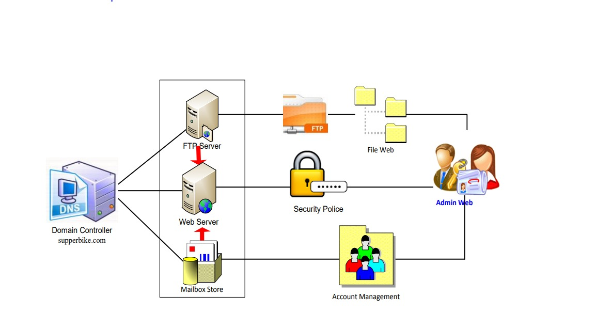
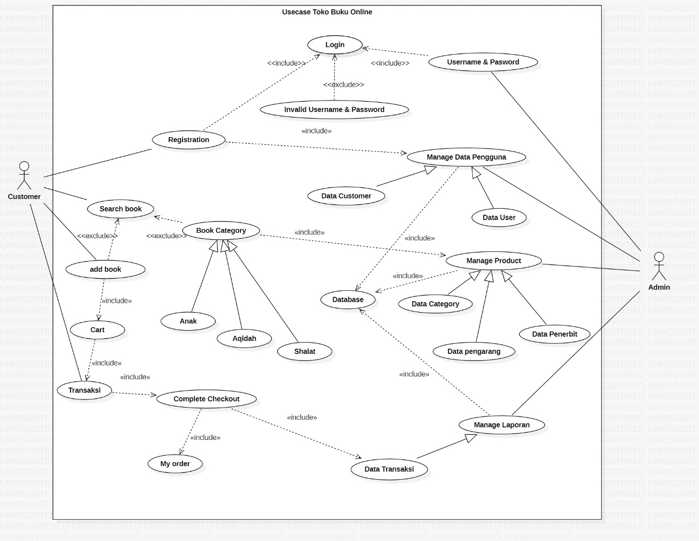
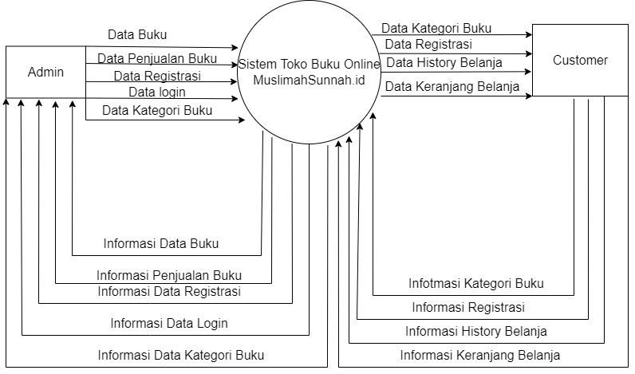
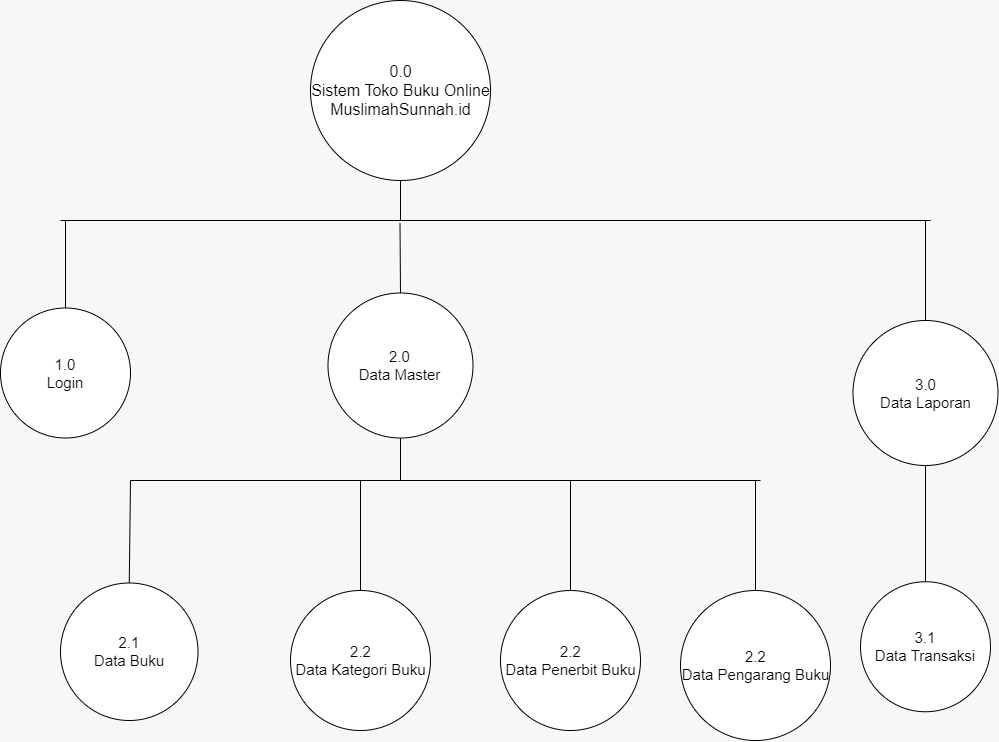
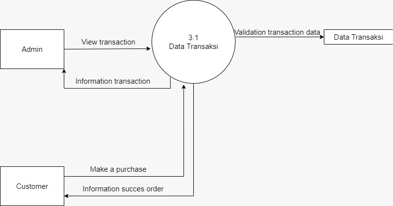

Teknologi yang semakin pesat dan ilmu pengetahuan yang semakin luas merubah pola aktivitas manusia masa kini, salah satunya yaitu aktivitas jual beli. Pada saat ini transaksi jual beli tidak selalu harus bertatap muka antara pihak penjual dan pihak pembeli serta tidak terbatas oleh waktu, seperti yang terjadi pada proses pemesanan dan penjualan buku secara online. Pembeli cukup melihat dan memilih buku yang akan dibelinya dan membayar sesuai dengan prosedur yang ditententukan oleh penjual kemudian buku akan dikirim ke alamat yang diinginkan. Sistem penjulan seperti ini sangat efektif dan efisien karena penjual tidak harus selalu berjualan secara fisik dan tanpa ada batas waktu, hal ini disebabkan karena website dapat diakses dimanapun dan kapanpun. Sistem penjualan seperti ini juga disebut e-commerce atau sering disebut penjualan online. E-Commerce sangat cocok sebagai media penjualan sekaligus promosi dengan cakupan wilayah yang cukup luas.
Buku yang ditawarkan oleh sebuah toko buku mempunyai nilai jual yang kompetitif tetapi karena terhambat oleh promosi yang hanya mencakup daerah lokal menjadikan buku-buku ini kurang dikenal dan akibatnya kurang laku di pasaran. Oleh karena itu dibutuhkan sebuah toko online untuk membantu memasarkan buku yang ditawarkan oleh toko tersebut.
Berdasarkan latar belakang tersebut, maka dapat diambil perumusan masalah yaitu “Bagaimana membuat toko online untuk pemesanan dan penjualan buku sebagai media promosi dan jual beli buku secara online?”.
Dalam penyusunan ini, penulis merasa perlu untuk membatasi masalah agar tidak menyimpang dari tujuan semula. Untuk itu penulis membatasi pokok permasalahan pada :
Adapun tujuan dari penelitian ini adalah untuk menghasilkan sistem toko online berbasis web untuk pemesanan dan penjualan buku dengan fasilitas pemesanan buku yang menggunakan metode pembayaran melalui transfer bank.
Pengguna diharapkan dapat memiliki toko online sebagai media jual beli buku,ini diharapkan dapat memberikan kemudahan bagi pengguna untuk mempromosikan buku secara online.
Di samping itu pembeli yang ingin membeli buku tidak harus datang ke toko buku untuk mendapatkan buku yang di inginkan.
Metedologi penelitian yang digunakan untuk membuat laporan ini adalah sebagai berikut:
Berikut ini adalah metode yang digunakan untuk mengumpulkan data:
1. Studi pustaka
Pengumpulan data dan informasi serta pengetahuan yang didapatkan dari buku-buku tentang teori yang bersangkutan dalam pembuatan toko online yang akan dibuat.
2. Konsultasi dan diskusi
Tahap ini merupakan diskusi antara anggota kelompok mengenai genre buku apa saja yang ada di toko online tersebut.
Yaitu melakukan perancangan sistem dengan menggunakan flowchart dan menggunakan Entity Relationship Diagram untuk perancangan database.
Tahap ini merupakan pembuatan toko online untuk pemesanan dan penjualan buku dengan menggunakan bahasa pemrograman PHP dan database MySQL.
Pada tahap ini digunakan untuk pengujian terhadap toko online yang telah dibuat. Pengujian ini dimulai dengan membuat suatu uji kasus untuk setiap fungsi dan tampilan antar muka pada toko online.
Tahap ini berisi kesimpulan dari semua tahapan yang telah dilakukan serta saran yang berhubungan dengan hasil yang sudah dicapai.
Digunakan untuk membuat laporan dari hasil penelitian yang sudah dilakukan sebagai bertanggung jawab.
Metode RAD (Rapid Application Development) menggunakan metode iteratif (berulang) dalam mengembangkan sistem dimana model bekerja sistem dikonstruksikan di awal tahap pengembangan dengan tujuan menetapkan kebutuhan pengguna. Metode RAD menekankan cakupan pemodelan bisnis (bussiness modelling), pemodelan data (data modelling), pemodelan proses (process modelling), pembuatan aplikasi (application generation) dan pengujian (testing). Melakukan pemenuhan kepada semua kebutuhan pengguna yang berkaitan dengan perancangan sistem penjualan buku online. pengguna dan penganalisis bertemu untuk mengidentifikasikan tujuan-tujuan aplikasi atau sistem serta untuk Pengembang sistem harus dapat mencari informasi untuk memenuhi kebutuhan aplikasi ini. penjualan buku online berbasis web adalah sebuah sistem informasi yang akan membantu dalam memperlancar proses bisnis penjualan buku yang selama ini dilakukan secara konvensional saja. Kehadiran sistem informasi penjualan buku online, akan dapat membantu Toko dalam menjual buku kepada konsumen secara online dengan memanfaatkan teknologi . Konsumen yang ingin mencari buku dapat bertransaksi secara langsung melalui sistem ini dengan hanya mengakses website penjualan buku ini.
Fase perancangan sistem penjualan buku online menerapkan strategi back-end dan front-end. Dimana backend merupakan halaman yang di khususkan bagi admin untuk mengelola website tersebut. Sedangkan front-end disediakan untuk pengguna akhir (end-user) dalam hal ini pengunjung website, baik yang hanya sekedar ingin melihat informasi maupun bagi mereka yang ingin mencari dan membeli buku. Selama fase perancangan, pengguna merespon prototype yang ada dan penganalisis memperbaiki modul-modul yang dirancang Untuk mempermudah dalam pemahaman model arsitektur pengembangan sistem, perlu memahami model dari arsitektur sistem Penjualan buku online. Hal ini memerlukan perhatian khusus pada konten web, rencana bisnis, kegunaan, perancangan interaksi, informasi dan perancangan arsitektur website. Model arsitektur ini mendeskripsikan perancangan dari perangkat lunak disisi web server dan client. Web server menggunakan apache, script PHP dan menggunakan basis data MySQL.
Dalam fase perancangan mengindentifikasikan semua struktur sistem, prinsip komponen (sub-sistem/modul), hubungannya dan model pendistribusi informasinya. Berdasarkan pemahaman dari sistem yang berjalan, dalam hal ini menggunakan website sebagai media untuk melakukan penjualan secara online. Perancangan sistem ini dapat memberikan kemudahan bagi pengguna karena memiliki interface yang sederhana dan mudah memahaminya dan dapat menangani masalah pengelolaan data profil, buku yang dijual, deskripsi buku secara detil dan pemesanan secara online dimana data yang tersimpan dalam bentuk file yang terpusat dalam bentuk server dan kemudian diproses oleh komputer. Perancangan arsitektur mempresentasi kerangka kerja dari sistem perangkat lunak yang dibangun. Deskripsi arsitektur mengadopsi spesifikasi sistem, model analisis, dan interaksi subsistem yang telah didefenisikan pada tahap analisis.
Untuk perancangan model arsitektur sistem jaringan dimaksudkan untuk memberikan deskripsi dari kebutuhan hardware jaringan dan model web hostimg dari arsitektur teknologi jaringan yang mendukung dalam penerapan sistem penjualan buku online.

Setelah menganalisa dan melakukan kegiatan wawancara, hasil yang didapat adalah segala informasi mengenai kebutuhan sistem yang akan dikembangkan. Kebutuhan sistem dipetakan antara kategori pengguna atau user dan fasilitas sistem sesuai kebutuhan.

Untuk pemodelan sistem penjualan buku online ini diawali dengan menampilkan diagram use case. Diagram ini untuk menjelaskan manfaat penggunaan sistem menurut sudut pandangan orang yang berada di luar sistem atau actor. Diagram ini sebagai fungsionalitas suatu sistem atau kelas dari cara kerja sistem berinteraksi dengan dunia luar. Diagram use case pengelolaan konten website sistem penjualan buku online terdiri dari admin, pelanggan dan guest. Actor admin bertugas untuk memanajemen isi dari website secara keseluruhan. Actor pelanggan mengelola isi dari profil sendiri, melihat promosi khusus, memesan buku dan melakukan konfirmasi pembayaran. Sedangkan actor guest adalah pengunjung website yang ingin mendapatkan informasi mengenai buku.

Use Case Diagram Sistem Penjualan Buku Online




